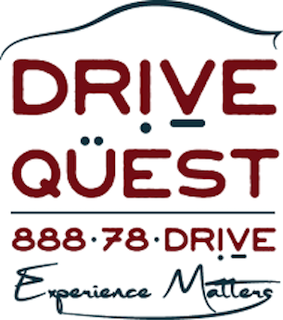
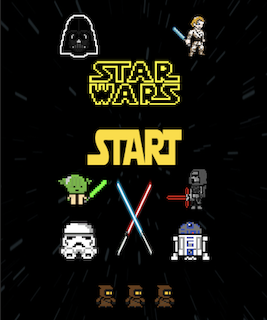
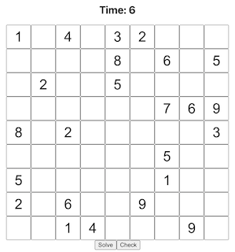
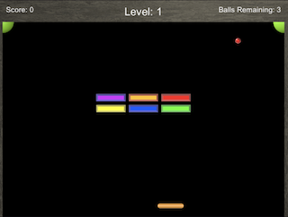
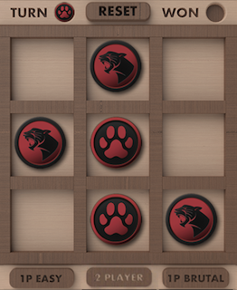

Below are some of my favorite projects I have worked on. Some were collaborative
projects developed
by teams as a part of our coursework, while others
are personal projects I have worked on in my
free time. Please check them all out
and feel free to message me on LinkedIn or email me with any questions!
Click on a project to view its functionality, or click the button below to view the code.

This is a larger scale project that I am apart of that is still in development.
It is being developed over the course of 2 semesters by the students in the Software
Engineering courses SE300/310/320. The SRS document linked below has a detailed overview
of the product with its parameters, requirements, and goals. Throughout these classes and
time spent working on this project, I have learned about all aspects of the Software Development Cycle,
and had the priveledge to see our team's work come to life on a real product that will be delivered to a company.

I worked on this as my final project in an intro to Unity class with 3 other classmates.
It is a fun game inspired by galaga but with a Star Wars twist! I learned a lot about creating
a 2D game in a 3D space, and about implementing art and sounds into Unity games.

This is a personal project of mine that I decided to make out of my love for sudoku.
I use a sudoku app on my phone almost everyday, but one feature I always sought after was
a way for the user to input a puzzle, and have the app solve it for you. So I started by
making a general sudoku playing app, then began to implement my ideas of having a secondary
feature of a sudoku solver within the app.
I learned a lot about Full Stack app creation and got more experience with React and using public npm libraries.

I made this game as an assignment in an intro to Unity class.
It was inspired by the game Brick Buster, and has multiple levels to play through.
It was a fun introduction to game and level design and it tought me a lot about
the Unity game engine.

I made as an assignment in an intro to Unity class.
It is a simple Tic-Tac-Toe game that can be played as Player vs Player,
or Player vs varying difficulties of AI. It was a great introduction to using the Unity
engine to create games, and also tapped into creation of Artificial Intelligence for game opponents.